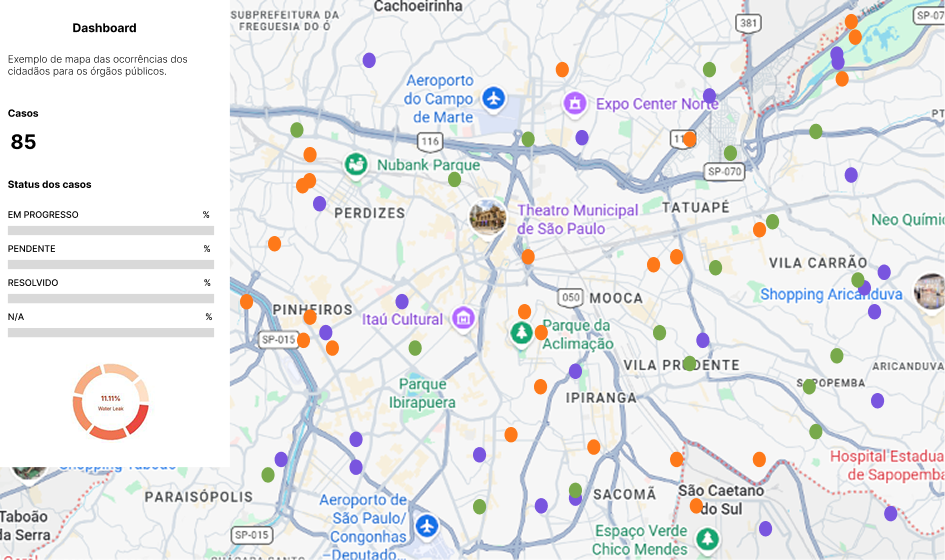
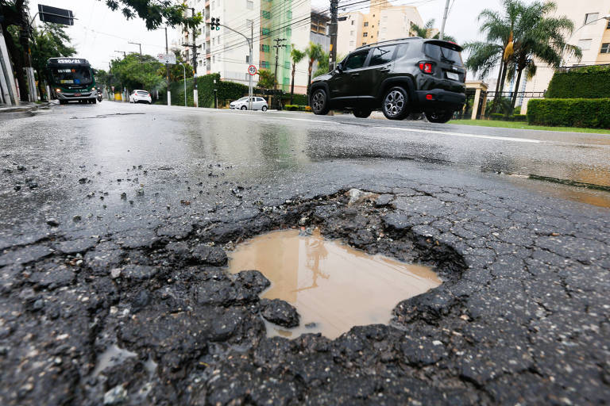
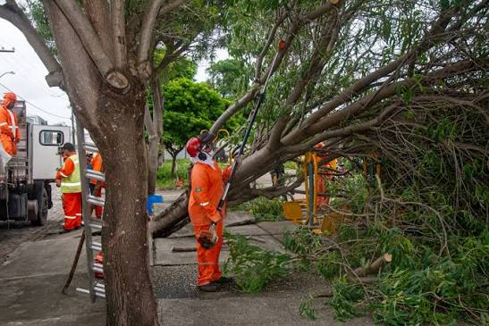

water_drop
-
40,3%
de perda de água na distribuição
Dados revelam problemas urbanos e a necessidade de soluções mais eficientes
de perda de água na distribuição
solicitações de tapa-buraco
de lixo acumulado
Fontes: ANA/SINISA, IBGE, ONU Meio Ambiente e SNIS. Indicadores de anos e abrangências diferentes.
O CityUp conta com geolocalização e análise de dados para identificar e organizar problemas urbanos.
Registro fotográfico
Geolocalização
Inteligência artificial
Conexão pública


Facilitar a comunicação entre cidadãos e órgãos públicos, tornando o registro de problemas urbanos mais acessível
Além de promover transparência, agilizar o encaminhamento de ocorrências e acompanhar a resolução dos problemas identificados
Mais participação cidadã;
Facilidade para comunicar problemas;
Transparência no acompanhamento.

Melhor organização das solicitações;
Identificação de problemas recorrentes;
Priorização de atendimentos.
Melhor conservação urbana;
Redução do desperdício de recursos;
Mais segurança e qualidade de vida.